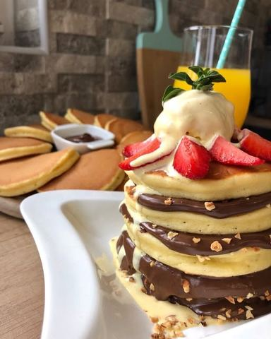

Moja beleška
SačuvanoToooliko savrseno dobre da su morale da zamirisu ovog jutra 🤤 #yummy 💫RECEPT 💫 * 2 jaja
Sastojci
Priprema
Žumanca umutiti sa šećerima pa dodati kašičicu arome vanile, u to dodati istopljen puter, mleko, pa brašno sa pzp. Dobro umutiti žicom da nema grudvica, a na kraju dodati belanca umucena u čvrst šne i lagano ih promešati sa ostatkom smese. Tiganj zagrejati pa temperaturu smanjiti duplo i tako ih peci. Sipa se smesa na topao tiganj, sačeka se pojava mehurića po površini palačinke i to je momenat kada se okreće na drugu stranu. Od svih recepata koje sam isprobala (čitaj mnoogo) ovaj je bas onaj koji u poslednje vreme volim da napravim. Mekane su, vazdušaste, i ukusne. Moja dečica ih često pojedu bez ikakvih namaza 🤗 Kombinacija za filovanje, bezbroj 🤤, a subota i nedelja su bas nekako idealni za isprobavanje, Javite mi utiske, Prijatno! 💞
Originalni opis sa Instagrama
Toooliko savrseno dobre da su morale da zamirisu ovog jutra 🤤 #oupsididitagain #americanpancakes #yummy 💫RECEPT 💫 * 2 jaja * 80 gr šećera * 1 vanilin šećer * kašičica arome vanile * 300 gr mekog brasna * 360 ml mleka * 60gr istopljenog putea ili 60 ml ulja * 1 prasak za pecivo Žumanca umutiti sa šećerima pa dodati kašičicu arome vanile, u to dodati istopljen puter, mleko, pa brašno sa pzp. Dobro umutiti žicom da nema grudvica, a na kraju dodati belanca umucena u čvrst šne i lagano ih promešati sa ostatkom smese. Tiganj zagrejati pa temperaturu smanjiti duplo i tako ih peci. Sipa se smesa na topao tiganj, sačeka se pojava mehurića po površini palačinke i to je momenat kada se okreće na drugu stranu. Od svih recepata koje sam isprobala (čitaj mnoogo) ovaj je bas onaj koji u poslednje vreme volim da napravim. Mekane su, vazdušaste, i ukusne. Moja dečica ih često pojedu bez ikakvih namaza 🤗 Kombinacija za filovanje, bezbroj 🤤, a subota i nedelja su bas nekako idealni za isprobavanje, Javite mi utiske, Prijatno! 💞